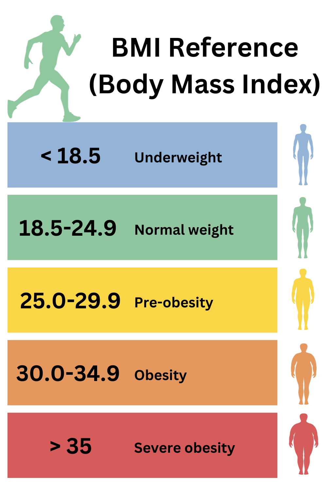

<style>
    /* Container Styling */
    .bmi-container {
        max-width: 400px;
        margin: 0 auto;
        padding: 2rem;
        background-color: #f4f4f4;
        border-radius: 10px;
        box-shadow: 0 4px 8px rgba(0, 0, 0, 0.1);
        font-family: Arial, sans-serif;
    }

    /* Label Styling */
    .bmi-container label {
        display: block;
        font-size: 1rem;
        font-weight: bold;
        color: #333;
        margin-top: 1rem;
    }

    /* Input Styling */
    .bmi-container input[type="number"] {
        width: 100%;
        padding: 0.5rem;
        margin-top: 0.5rem;
        margin-bottom: 1rem;
        font-size: 1rem;
        border: 1px solid #ccc;
        border-radius: 5px;
        box-sizing: border-box;
        background-color: #fff;
        transition: border 0.3s ease;
    }

    .bmi-container input[type="number"]:focus {
        border: 1px solid #ff4500;
        outline: none;
    }

    /* Button Styling */
    .bmi-container button {
        width: 100%;
        padding: 0.8rem;
        font-size: 1rem;
        color: #fff;
        background-color: #ff4500;
        border: none;
        border-radius: 5px;
        cursor: pointer;
        font-weight: bold;
        margin-top: 1rem;
        transition: background-color 0.3s ease;
    }

    .bmi-container button:hover {
        background-color: #cc3700;
    }

    /* Result Styling */
    #result {
        margin-top: 2rem;
        text-align: center;
    }

    /* Ensure BMI result is visible when calculated */
    #result h2 {
        font-size: 1.5rem;
        font-weight: bold;
        color: #333;
    }

    #bmi-value {
        font-size: 1.8rem;
        color: #333;
    }

    #bmi-category {
        font-size: 20px;
    }

    /* BMI Categories with Colors */
    #bmi-category.underweight {
        color: #1e90ff;
        /* Light Blue for Underweight */
        font-weight: bold;
    }

    #bmi-category.normal {
        color: #28a745;
        /* Green for Normal weight */
        font-weight: bold;
    }

    #bmi-category.overweight {
        color: #ffcc00;
        /* Yellow for Overweight */
        font-weight: bold;
    }

    #bmi-category.obese {
        color: #dc3545;
        /* Red for Obese */
        font-weight: bold;
    }

    /* Hidden Class for Result Display Toggle */
    .hidden {
        display: none;
    }

    .bmi-info {
        font-size: 1.1rem;
        line-height: 1.6;
        color: #333;
        max-width: 700px;
        padding: 1rem;
        background-color: #f9f9f9;
        border-radius: 8px;
        box-shadow: 0 4px 8px rgba(0, 0, 0, 0.1);
        font-family: Arial, sans-serif;
    }

    .bmi-info .first-letter {
        font-size: 2rem;
        color: #ff4500;
        /* Highlight color */
        font-weight: bold;
        float: left;
        margin-right: 5px;
        line-height: 1;
    }
</style>


<main>

    <div class="row p-1 mt-3">
        <div class="col-8 d-flex justify-content-between" >
            
            <div class="bmi-container" >
                <label for="weight">Weight (kg):</label>
                <input type="number" id="weight" placeholder="Enter your weight">

                <label for="height">Height (cm):</label>
                <input type="number" id="height" placeholder="Enter your height">

                <button onclick="calculateBMI()">Calculate BMI</button>

                <div id="result" class="hidden">
                    <h2>Your BMI is: <span id="bmi-value"></span></h2>
                    <p id="bmi-category"></p>
                </div>
            </div>
        </div>
        <div class="col-4" >
            <p class="bmi-info">
                <span class="first-letter">B</span>ody Mass Index (BMI) is a simple, widely used metric that helps
                assess whether an individual's weight is within a healthy range based on their height. Calculated by
                dividing a person’s weight (in kilograms) by the square of their height (in meters), BMI provides a
                quick estimate of body fat levels that can indicate potential health risks. Recognizing one’s BMI is
                important because maintaining a healthy weight plays a critical role in reducing the risk of chronic
                diseases, such as heart disease, diabetes, and hypertension. Although BMI doesn’t measure body fat
                directly, it serves as an accessible screening tool to promote awareness and encourage individuals to
                seek further health evaluations or adopt a healthier lifestyle if necessary.
            </p>
        </div>
    </div>


</main>


<script>
    function calculateBMI() {
        const weight = parseFloat(document.getElementById('weight').value);
        const height = parseFloat(document.getElementById('height').value) / 100; // Convert cm to meters
        const result = document.getElementById('result');
        const bmiValue = document.getElementById('bmi-value');
        const bmiCategory = document.getElementById('bmi-category');

        if (weight && height) {
            const bmi = (weight / (height * height)).toFixed(1);
            bmiValue.textContent = bmi;
            result.classList.remove('hidden'); // Make result visible

            // Reset category classes
            bmiCategory.className = ""; // Clear existing category classes
            bmiCategory.classList.add("bmi-category");

            // Determine BMI Category
            if (bmi < 18.5) {
                bmiCategory.textContent = 'Underweight';
                bmiCategory.classList.add('underweight');
            } else if (bmi >= 18.5 && bmi < 24.9) {
                bmiCategory.textContent = 'Normal weight';
                bmiCategory.classList.add('normal');
            } else if (bmi >= 25 && bmi < 29.9) {
                bmiCategory.textContent = 'Overweight';
                bmiCategory.classList.add('overweight');
            } else {
                bmiCategory.textContent = 'Obese';
                bmiCategory.classList.add('obese');
            }
        } else {
            alert("Please enter valid weight and height.");
        }
    }

</script>